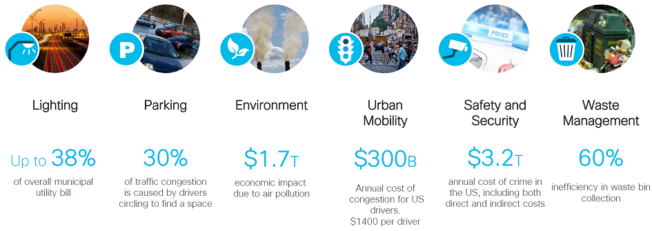
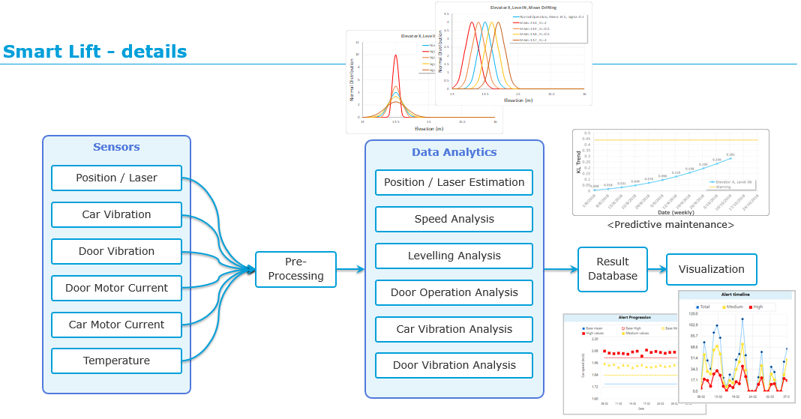
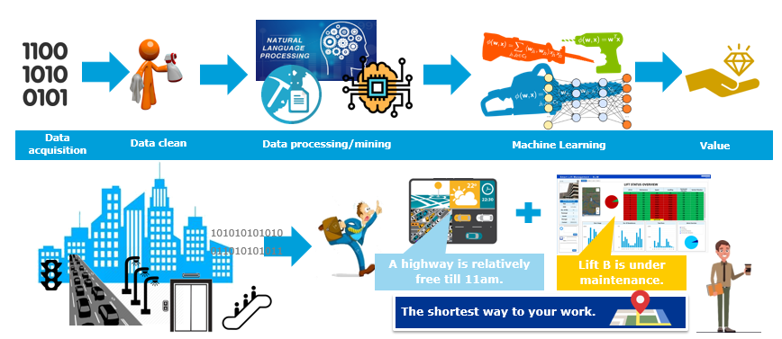
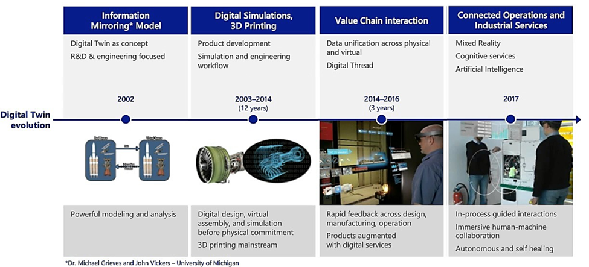

AI for Smart Cities¶
I had the honer to give an ‘AI for Smart Cities’ presentation in ‘Big Data & AI Asia’ conference Dec 5. The conference was hold in Suntec and it was a big event around hundreds people participated.
I managed to convey the following messages in my talk:
- What is smart city
- Why AI is relevant
- What DNVGL has done and what we can offer to the market.
This is a picture of my presentation. And in this blog, I will briefly introduce the relevant content.
Why Cities need to be smart?¶
According to statistics, urbanization is increasing world-wide and it also bring challenges:
- By 2050 cities will accommodate about 66% percent of the world’s population
- In 2012 cities occupied only about 3% of the global land area
- In 2012 cities consumed about 75% of natural resources
- In 2012 cities produced 60%-80% of all greenhouse gas (GHG) emissions
In order to address the above challenges, new and efficient ways have to be found for city operation. According to investigation from Cisco, there are improvements potential on many city operation aspects.
In order to be more efficient to operate city, we need to rely on digital way to have better insight of infrastructure status, automate operation to replace repetitive human work, take better action based on historical data, optimize infrastructure efficiency, etc.
The crucial parts of the digital way are to get the data, manage the data, bring value from the data, and take action accordingly. We call this new way of operating city as ‘Smart city’, which is mainly a data business.
Data from cities¶
The Smart city business all starts from data. In order to find a better way to operate city, first you need to understand how the city is operating.
Everyone in the cities is generating new data every day, e.g. shopping records, register personal data online, medical data etc. It is huge amount of data set from human being.
With the boost of IoT technology, we predict even more data will come from sensors than human being. We see cheaper sensors, faster network, better toolset will be the trend, and much more data will be collected in an automatic manner.

Yes, it is big data problem! In order to process the big data, we need high automation level and new ways of processing. AI technology needs to be adopted.
Even though AI is mainly about data analytics part, without proper data acquisition, data management, data visualization, it will be difficult to succeed.
Why AI is relevant?¶
The first question maybe deserve answering is what is AI.
According to definition on wikipedia, AI means: Any device that perceives its environment and takes actions that maximize its chance of successfully achieving its goals.
To put it simple, it is to get the data, do analytics then facilitate better decision making. Still it is data business, it is all about data.
There are different ways to categorize AI technology:
- Classical rule based AI, Machine Learning, Deep learning
- Supervised and unsupervised learning depends on whether the data is labled or not
- Regression or classification depends on whether the label is continuous or not
- In-house algorithm or cloud SaaS services
I am pretty sure there are other ways to categorize AI, and I do not want to be too technical in this blog and will talk about more in later blogs. One thing worth mentioning is all the above AI technical choices are relevant to Smart city context which depends on detailed scenario.
DNVGL’s Smart city footprint¶
DNVGL recently setup a digital hub in Singapore aimed at digitising for our traditional industry sectors like oil and gas, maritime and energy. At the meantime, we are also trying to ‘penetrate’ into the smart city market.
You can have a check of following news: https://sg.channelasia.tech/article/646408/solution-provider-dnv-gl-launches-digital-hub-singapore/
On the competence wise, the digital hub has mixed competence:
- Data analytics
- Software development
- IoT and domain knowledge in various industry sectors
Smart city is a big concept, digital hub Singapore mainly focus on the following areas:
- Infrastructure performance
- Climate change
- Cyber security
I will introduce you what we have done and our offerings in the following parts.
Infrastructure performance¶
We see aging infrastructures in the cities. In order to address the pressure from urbanization, there is need to extend the life cycle of infrastructure.
Energy consumption is also a big challenge for cities with increasing population, how to reduce the energy consumption is a big topic.
To maintenance the infrastructure also requires a lot of effort, we need to find a way to reduce the operational cost.
And how to improve the efficiency of infrastructures like electric grid, ports, transportation systems will be important for big cities.
Digital hub Singapore completes a smart lift project, I will introduce the high level concept in the following part.
Smart Lift¶
There are 61,000 lifts in Singapore. The total number of lifts is projected to double to 121,100 in the next 10 years.
These days, the lift maintenance work is mainly done by human being. Imaging if you want to understand the status of the lifts, you have to invite lift technician to the site, open the lifts, then do the measurement. It is also required that the lifts need to be checked regularly. It is expensive to do the check and some times, lift break down in-between the regular checks, and measurement results are inaccurate sometimes.
The smart lift project is to address the above challenge. The main purpose of smart lift project is to do predictive maintenance by utlizing IoT and anomaly detection technology.
We installed laser, vibration, current, temperature, humidity sensors on lift car top and lift motor room. The raw data will be pre-processed in the gateway, then send to server for further processing. The main metrics we are measuring is peak speed during trip, levelling issues, door operation, car vibration, etc.
The methodology of anomaly detection, which belongs to unsupervised learning. To put it simple, it figures out the normal pattern from operation data first. Then use the pattern to detect anomaly in the future.
Once anomaly is detected, then further analysis will start to see whether to send alert to users or not.
Besides that, we also provide trending chart to see whether the operational data e.g. levelling is on the right direction or not.
In fact, we believes the methodology we use in smart lift project applies for all kinds of smart city projects and data driven projects.
We see big potential to consolidate the framework and make future development much more efficient.
Digital Twin¶
DNVGL has adopted digital twin concept in existing industries, e.g. Maritime. We will introduce the digital twin for the smart lift too.
Digital twin refers to a digital replica of physical assets. The digital representation provides both the elements and the dynamics of how an Internet of things device operates and lives throughout its life cycle.
For the smart lift, the digital twin means the data sychornization between physical space and digital space. We introduce 3d viewer and dashboard to make it much easier for the users to do monitoring the system and trouble shooting.
Edge Computing¶
We see edge computing is playing important role in smart lift project. Edge computing can address the following issues:
- Reduce operational cost by reducing the data transferred
- Take actions for urgent issues by avoiding back-and-forth communication
- Do data processing for offline scenario
- Address some scenario requires high data sampling resolution
If we take a look of the amount of data generated from lift:
| Number of lifts | Time period | Data size |
| 1 | 0.1 second | 360 bytes |
| 1 | 1 day | 311 MB |
| 10 | 1 day | 3 GB |
| 100 | 1 day | 30 GB |
| 100 | 1 month | 1 TB |
| 60, 000 | 1 month | 600 TB |
As you can see the big amount of data will cause pressure on the computational power and also increase the operational cost. And we also find out in order to detect anomaly in some scenario, we need 10 times higher sampling resolution than the normal ones. If we increase the communication sampling resolution, it will cause data loss and also increase cost a lot.
Edge computing can definitely help a lot.
For climate change and information security, which are big topics too. I will write another blog to introduce them.
Written by Binwei@Singapore